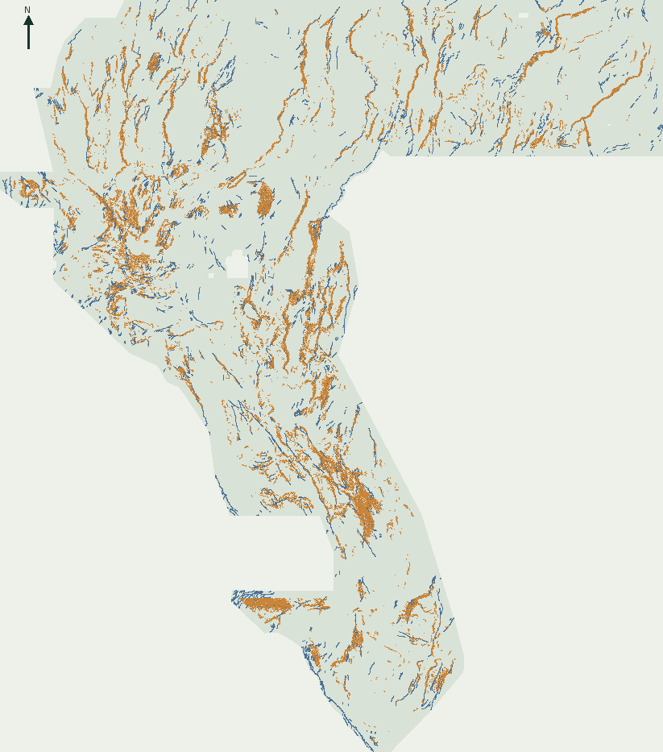

Fault discovery,
without the false certainty.
Geophysical–surface structural contrast on the Great Basin grid. A genuinely new prediction, a measured failed gate, and the evidence needed to decide what to try next.
What changed
Signed gravity–cover normals, persistent gradients and surface curvature replace the old ad-hoc rank blend. The file was inferred from a newly fitted model using competition feature/label rasters only. No prior submission supplies a pixel or model feature.
Measured comparison: 0.19317 versus 0.19467 for surface-only; paired lift -0.00150, 2/4 folds positive. Local catalogue scores are not public leaderboard scores.
Unique, not a renamed reference
395 aligned accessible prior files compared. No canonical decoded match. 0.0% of emitted support is outside the binary / ≥0.5 continuous diagnostic union (the original 20% support-novelty diagnostic FAILED); 5,326,233 prior-union cells are not emitted. A dense historical density-probe fills nearly the whole footprint, so zero support novelty against that union does not mean the sparse decoded pattern was copied. Independently placed A/B outputs are also not simply unioned; a same-budget max-view union differs at 32,553 emitted positions.
Bounded audit, not global novelty or proof of new faults. NaN/sentinel prior cells are normalized to zero and values compared at float32 precision. See full comparison scope and exclusions.
Open every comparison →How 0.2778 was reached
Reference bytes show exactly 2,545 off-catalogue flank dots removed within 200 m of known traces. None were on the known mask. Staff confirm that known pixels do not pay penalties. Reduced weak flank mass is a plausible mechanism, not a reconstruction of hidden scoring.
Read the corrected autopsy →
Every A-only proposal gets a reason
925 emitted A-only pixels have individual coordinate, score, physical-signature, alternative-explanation and verification-status rows. These are falsifiable hypotheses, not expert certification.
Download geological reasoning CSV →Last official board observation: 2026-10-06, leader 0.3774; the brief’s 0.3195 was rank 7. DrivenData automatic access is disabled under its Terms; no artificial freshness is reported.